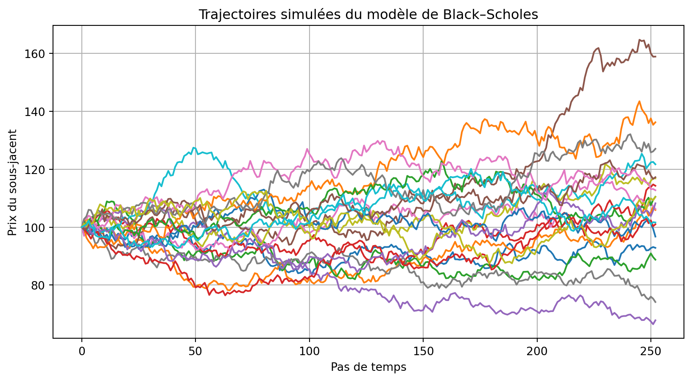

Code
import pandas as pd
import numpy as np
import matplotlib.pyplot as plt
from scipy.stats import norm
np.random.seed(102)KOUGOUM Marilene
Dans ce document, nous implémentons et illustrons la valorisation d’options exotiques dans le cadre du modèle de Black–Scholes :
Toutes les fonctions sont regroupées dans une classe Python Optional_Excotic.
Nous commençons par importer les bibliothèques nécessaires et fixer une graine aléatoire pour la reproductibilité.
Nous définissons ensuite la classe Optional_Excotic qui regroupera toutes les méthodes de pricing et de calcul de Greeks.
class Optional_Excotic:
def __init__(self):
pass
def black_scholes_call(self, S, K, T, r, sigma):
"""
Prix d'un call européen dans le modèle de Black–Scholes.
"""
if T == 0:
return max(0, S - K)
d1 = (np.log(S / K) + (r + 0.5 * sigma**2) * T) / (sigma * np.sqrt(T))
d2 = d1 - sigma * np.sqrt(T)
return S * norm.cdf(d1) - K * np.exp(-r * T) * norm.cdf(d2)
def call_spread(self, S, K1, K2, T, r, sigma):
"""
Prix d'un Call Spread : Buy Call(K1) - Sell Call(K2)
"""
call1 = self.black_scholes_call(S, K1, T, r, sigma)
call2 = self.black_scholes_call(S, K2, T, r, sigma)
return call1 - call2
def butterfly_spread(self, S, K1, K2, K3, T, r, sigma):
"""
Prix d'un Butterfly Spread standard.
Structure : +Call(K1), -2 Call(K2), +Call(K3)..
"""
call1 = self.black_scholes_call(S, K1, T, r, sigma)
call2 = 2 * self.black_scholes_call(S, K2, T, r, sigma)
call3 = self.black_scholes_call(S, K3, T, r, sigma)
return call1 - call2 + call3
# Simulations Monte Carlo pour les trajectoires Black Scholes
def simulate_black_scholes(self, S0, T, r, sigma, n_paths, n_steps, seed=None):
"""
Simule des trajectoires du sous-jacent suivant un modèle de Black–Scholes :
dS_t = r S_t dt + sigma S_t dW_t
via un schéma d'Euler exponentiel.
"""
if seed is not None:
np.random.seed(seed)
else:
np.random.seed(102)
dt = T / n_steps
paths = np.zeros((n_steps + 1, n_paths))
paths[0] = S0
for t in range(1, n_steps + 1):
Z = np.random.normal(0, 1, n_paths)
paths[t] = paths[t - 1] * np.exp((r - 0.5 * sigma**2) * dt + sigma * np.sqrt(dt) * Z)
return paths
# Évaluation des options asiatiques avec fenêtre de moyennage spécifique
def asian_option_monte_carlo(self, S0, K, T, r, sigma, n_paths, n_steps, delta,
option_type="call", seed=None):
"""
Pricing d'une option asiatique avec moyenne arithmétique sur la fenêtre [T - delta, T].
"""
paths = self.simulate_black_scholes(S0, T, r, sigma, n_paths, n_steps, seed=seed)
start_index = int((T - delta) * n_steps / T)
averages = np.mean(paths[start_index:], axis=0) # moyenne sur [T-delta, T]
if option_type == "call":
payoffs = np.maximum(averages - K, 0)
else:
payoffs = np.maximum(K - averages, 0)
expectation = np.mean(paths[-1] - K)
return np.exp(-r * T) * np.mean(payoffs), paths, averages, expectation
# Barrier option pricing
def barrier_option(self, S0, K, T, r, sigma, n_paths, n_steps, barrier,
option_type="call", barrier_type="up-and-out", seed=None):
"""
Pricing d'une option barrière (up-and-out ou down-and-out) par Monte Carlo.
"""
paths = self.simulate_black_scholes(S0, T, r, sigma, n_paths, n_steps, seed=seed)
if barrier_type == "up-and-out":
invalid = np.any(paths > barrier, axis=0)
elif barrier_type == "down-and-out":
invalid = np.any(paths < barrier, axis=0)
else:
raise ValueError("Unsupported barrier type")
if option_type == "call":
payoffs = np.maximum(paths[-1] - K, 0)
else:
payoffs = np.maximum(K - paths[-1], 0)
payoffs[invalid] = 0 # Invalider les gains pour les chemins franchissant la barrière
return np.exp(-r * T) * np.mean(payoffs)
def calculate_greeks_asiatique(self, option_price_fn, S0, K, T, r, sigma,
delta=0.25, n_paths=1000, n_steps=100,
epsilon=1e-4, greek="delta", seed=None):
"""
Calcul des Greeks pour une option asiatique par différences finies.
option_price_fn doit être typiquement: self.asian_option_monte_carlo
(qui renvoie (prix, paths, averages, expectation)).
"""
if greek == "delta":
price_up = option_price_fn(S0 + epsilon, K, T, r, sigma,
n_paths, n_steps, delta, seed=seed)[0]
price = option_price_fn(S0, K, T, r, sigma,
n_paths, n_steps, delta, seed=seed)[0]
return (price_up - price) / epsilon
elif greek == "gamma":
price_up = option_price_fn(S0 + epsilon, K, T, r, sigma,
n_paths, n_steps, delta, seed=seed)[0]
price = option_price_fn(S0, K, T, r, sigma,
n_paths, n_steps, delta, seed=seed)[0]
price_down = option_price_fn(S0 - epsilon, K, T, r, sigma,
n_paths, n_steps, delta, seed=seed)[0]
return (price_up - 2 * price + price_down) / (epsilon ** 2)
elif greek == "vega":
price_up = option_price_fn(S0, K, T, r, sigma + epsilon,
n_paths, n_steps, delta, seed=seed)[0]
price = option_price_fn(S0, K, T, r, sigma,
n_paths, n_steps, delta, seed=seed)[0]
return (price_up - price) / epsilon
elif greek == "theta":
price_up = option_price_fn(S0, K, T - epsilon, r, sigma,
n_paths, n_steps, delta, seed=seed)[0]
price = option_price_fn(S0, K, T, r, sigma,
n_paths, n_steps, delta, seed=seed)[0]
return (price - price_up) / epsilon
elif greek == "rho":
price_up = option_price_fn(S0, K, T, r + epsilon, sigma,
n_paths, n_steps, delta, seed=seed)[0]
price = option_price_fn(S0, K, T, r, sigma,
n_paths, n_steps, delta, seed=seed)[0]
return (price_up - price) / epsilon
else:
raise ValueError("Unsupported Greek type")
def calculate_greeks_barrier(self, option_price_fn, S0, K, T, r, sigma,
barrier, option_type="call", barrier_type="up-and-out",
delta=0.25, n_paths=1000, n_steps=100,
epsilon=1e-4, greek="delta", seed=None):
"""
Calcul des Greeks pour une option barrière par différences finies.
Parameters:
option_price_fn : fonction utilisée pour calculer le prix de l’option.
S0 : prix initial du sous-jacent.
K : prix d’exercice (strike).
T : maturité (temps avant l’échéance).
r : taux d’intérêt sans risque.
sigma : volatilité du sous-jacent.
barrier : niveau de la barrière.
option_type : type d’option, "call" ou "put".
barrier_type : type de barrière, "up-and-out" ou "down-and-out".
delta : taux de dividende (non utilisé ici, conservé pour homogénéité de signature).
n_paths : nombre de trajectoires Monte Carlo.
n_steps : nombre de pas de discrétisation dans la simulation Monte Carlo.
epsilon : petite perturbation utilisée pour l’approximation en différences finies.
greek : Greek à calculer ("delta", "gamma", "vega", "theta", "rho").
seed : graine utilisée pour la génération de nombres aléatoires.
"""
if epsilon <= 0:
raise ValueError("epsilon must be positive")
# Base price calculation
base_price = option_price_fn(S0, K, T, r, sigma,
barrier, option_type, barrier_type,
n_paths, n_steps, seed=seed)
if greek == "delta":
price_up = option_price_fn(S0 + epsilon, K, T, r, sigma,
barrier, option_type, barrier_type,
n_paths, n_steps, seed=seed)
return (price_up - base_price) / epsilon
elif greek == "gamma":
price_up = option_price_fn(S0 + epsilon, K, T, r, sigma,
barrier, option_type, barrier_type,
n_paths, n_steps, seed=seed)
price_down = option_price_fn(S0 - epsilon, K, T, r, sigma,
barrier, option_type, barrier_type,
n_paths, n_steps, seed=seed)
return (price_up - 2 * base_price + price_down) / (epsilon ** 2)
elif greek == "vega":
price_up = option_price_fn(S0, K, T, r, sigma + epsilon,
barrier, option_type, barrier_type,
n_paths, n_steps, seed=seed)
return (price_up - base_price) / epsilon
elif greek == "theta":
price_up = option_price_fn(S0, K, T - epsilon, r, sigma,
barrier, option_type, barrier_type,
n_paths, n_steps, seed=seed)
return (base_price - price_up) / epsilon
elif greek == "rho":
price_up = option_price_fn(S0, K, T, r + epsilon, sigma,
barrier, option_type, barrier_type,
n_paths, n_steps, seed=seed)
return (price_up - base_price) / epsilon
else:
raise ValueError("Unsupported Greek type. Supported types are: 'delta', 'gamma', 'vega', 'theta', 'rho'.")Pour la suite, on instancie la classe :
Sous la mesure risque-neutre, le prix \(S_t\) du sous-jacent suit :
\[ dS_t = r S_t \, dt + \sigma S_t \, dW_t, \]
où :
Le prix d’un call européen de strike \(K\) et maturité \(T\) est donné par la formule de Black–Scholes :
\[ C(S_0, K, T) = S_0 \Phi(d_1) - K e^{-rT} \Phi(d_2), \]
avec
\[ d_1 = \frac{\ln(S_0/K) + (r + \tfrac{1}{2}\sigma^2) T}{\sigma \sqrt{T}}, \quad d_2 = d_1 - \sigma \sqrt{T}. \]
np.float64(8.916037278572539)Un call spread (bull spread) consiste à :
Le payoff à maturité est :
\[ \Pi_{\text{spread}}(S_T) = \max(S_T - K_1, 0) - \max(S_T - K_2, 0). \]
Le prix est simplement la différence de deux prix de call Black–Scholes.
np.float64(9.86264005848053)Un butterfly spread (ou stratégie papillon) est une stratégie d’options à risque limité et gain limité, utilisée principalement pour parier sur une faible volatilité du sous-jacent.
La position classique consiste à utiliser trois calls européens de strikes différents : - +1 call strike \(K_1\)
- −2 calls strike \(K_2\)
- +1 call strike \(K_3\)
avec \(K_1 < K_2 < K_3\) et souvent \(K_2 = (K_1 + K_3)/2\).
np.float64(1.918299415796433)Le call spread est utilisé lorsque l’investisseur :
Le butterfly spread est utilisé lorsque l’investisseur :
C’est une stratégie non directionnelle, centrée sur un niveau de prix précis, qui gagne lorsque le marché reste calme.
Nous simulons \(N\) trajectoires du sous-jacent \(S_t\) sur \([0,T]\) avec \(n\) pas de temps.
(253, 20)
Une option asiatique est une option dont le payoff repose sur la moyenne des prix du sous-jacent sur une période donnée. Conçue pour atténuer l’impact des fluctuations brusques, elle offre un profil de risque plus stable, car la moyenne réduit la volatilité du payoff par rapport à une option dépendant uniquement du prix final.
Une option asiatique de type call, avec moyenne arithmétique sur une fenêtre \([T-\delta,T]\), a un payoff :
\[ \text{payoff} = \max\left(\bar{S}_{[T-\delta,T]} - K, 0\right), \]
où
\[ \bar{S}_{[T-\delta,T]} = \frac{1}{n}\sum_{t \in [T-\delta,T]} S_t. \]
S0 = 100
K = 100
T = 1.0
r = 0.02
sigma = 0.2
delta = 0.25 # fenêtre d’average : dernier quart de la vie de l'option
n_paths = 10_000
n_steps = 252
price_asian, paths_asian, averages, expectation = opt.asian_option_monte_carlo(
S0, K, T, r, sigma, n_paths, n_steps, delta, option_type="call", seed=123
)
price_asiannp.float64(8.057439373265455)Une option barrière est une option dont la validité dépend du franchissement d’un niveau prédéfini appelé barrière. Elle s’annule (knock-out) ou s’active (knock-in) selon que le sous-jacent atteint ce niveau au cours de sa vie. Parmi les options barrière les plus courantes, on distingue notamment les versions knock-out suivantes :
Dans ces deux cas, l’option cesse d’exister si le sous-jacent atteint la barrière, ce qui réduit son coût par rapport à une option classique mais introduit une dépendance forte au chemin suivi par le prix.
Nous considérons ici une option barrière de type up-and-out ou down-and-out :
Payoff d’un call barrière à maturité, en notant \(I_T\) l’indicateur d’absence de franchissement :
\[ \text{payoff} = I_T \cdot \max(S_T - K, 0). \]
np.float64(3.3006744151781695)Les Greeks sont approximés par différences finies. Pour la Delta notamment on a:
\[ \Delta \approx \frac{C(S_0 + \varepsilon) - C(S_0)}{\varepsilon}, \]
et pour la Gamma :
\[ \Gamma \approx \frac{C(S_0 + \varepsilon) - 2 C(S_0) + C(S_0 - \varepsilon)}{\varepsilon^2}. \]
La fonction calculate_greeks_asiatique applique ce schéma en appelant plusieurs fois
asian_option_monte_carlo.
S0 = 100
K = 100
T = 1.0
r = 0.02
sigma = 0.2
delta_window = 0.25
n_paths = 15_000
n_steps = 252
epsilon = 1e-2
greeks_asian = {
"Delta": opt.calculate_greeks_asiatique(
opt.asian_option_monte_carlo, S0, K, T, r, sigma,
delta=delta_window, n_paths=n_paths, n_steps=n_steps,
epsilon=epsilon, greek="delta", seed=123
),
"Gamma": opt.calculate_greeks_asiatique(
opt.asian_option_monte_carlo, S0, K, T, r, sigma,
delta=delta_window, n_paths=n_paths, n_steps=n_steps,
epsilon=epsilon, greek="gamma", seed=123
),
"Vega": opt.calculate_greeks_asiatique(
opt.asian_option_monte_carlo, S0, K, T, r, sigma,
delta=delta_window, n_paths=n_paths, n_steps=n_steps,
epsilon=epsilon, greek="vega", seed=123
),
"Theta": opt.calculate_greeks_asiatique(
opt.asian_option_monte_carlo, S0, K, T, r, sigma,
delta=delta_window, n_paths=n_paths, n_steps=n_steps,
epsilon=epsilon, greek="theta", seed=123
),
"Rho": opt.calculate_greeks_asiatique(
opt.asian_option_monte_carlo, S0, K, T, r, sigma,
delta=delta_window, n_paths=n_paths, n_steps=n_steps,
epsilon=epsilon, greek="rho", seed=123
),
}
pd.DataFrame.from_dict(greeks_asian, orient="index", columns=["Valeur"])| Valeur | |
|---|---|
| Delta | 0.575380 |
| Gamma | 0.018270 |
| Vega | 36.256141 |
| Theta | 5.889691 |
| Rho | 42.663436 |
De façon analogue, calculate_greeks_barrier applique les différences finies à la fonction de pricing barrier_option.
S0 = 100
K = 100
T = 1.0
r = 0.02
sigma = 0.2
barrier = 130
n_paths = 20_000
n_steps = 252
epsilon = 1e-2
# On crée un petit wrapper pour respecter la signature attendue par calculate_greeks_barrier
def barrier_price_fn(S, K, T, r, sigma, barrier, option_type, barrier_type,
n_paths, n_steps, seed=None):
return opt.barrier_option(S, K, T, r, sigma,
n_paths, n_steps, barrier,
option_type=option_type,
barrier_type=barrier_type,
seed=seed)
greeks_barrier = {
"Delta": opt.calculate_greeks_barrier(
barrier_price_fn, S0, K, T, r, sigma, barrier,
option_type="call", barrier_type="up-and-out",
n_paths=n_paths, n_steps=n_steps,
epsilon=epsilon, greek="delta", seed=123
),
"Gamma": opt.calculate_greeks_barrier(
barrier_price_fn, S0, K, T, r, sigma, barrier,
option_type="call", barrier_type="up-and-out",
n_paths=n_paths, n_steps=n_steps,
epsilon=epsilon, greek="gamma", seed=123
),
"Vega": opt.calculate_greeks_barrier(
barrier_price_fn, S0, K, T, r, sigma, barrier,
option_type="call", barrier_type="up-and-out",
n_paths=n_paths, n_steps=n_steps,
epsilon=epsilon, greek="vega", seed=123
),
"Theta": opt.calculate_greeks_barrier(
barrier_price_fn, S0, K, T, r, sigma, barrier,
option_type="call", barrier_type="up-and-out",
n_paths=n_paths, n_steps=n_steps,
epsilon=epsilon, greek="theta", seed=123
),
"Rho": opt.calculate_greeks_barrier(
barrier_price_fn, S0, K, T, r, sigma, barrier,
option_type="call", barrier_type="up-and-out",
n_paths=n_paths, n_steps=n_steps,
epsilon=epsilon, greek="rho", seed=123
),
}
pd.DataFrame.from_dict(greeks_barrier, orient="index", columns=["Valeur"])| Valeur | |
|---|---|
| Delta | 0.049868 |
| Gamma | -6.735741 |
| Vega | -19.610038 |
| Theta | -1.868288 |
| Rho | 9.062284 |
Question : comment comparer la sensibilité (Delta, Vega, etc.) d’une option barrière avec celle d’un call européen standard ?
Dans ce document, nous avons :
Questions de réflexion possibles pour aller plus loin :
Ce canevas servira de base pour d’autres TPs que nous exposerons sur ce site dans les publications à venir.